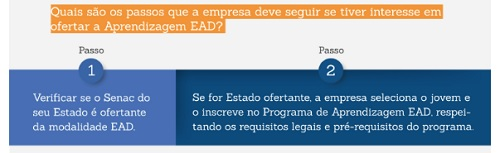

<!-- Utilizado para definir que este documento segue as regras de sintaxe do HTML 5 -->
<!DOCTYPE html>

<!DOCTYPE html>
<html lang="pt-br">

<head>
	<meta charset="UTF-8">
	<meta name="viewport" content="width=device-width, initial-scale=1.0">
	<link rel="stylesheet" type="text/css" href="../css/estilogeral.css" />
	<link rel="stylesheet" type="text/css" href="../css/styleprogramaaprendizagem.css" />
	<link rel="shotcut icon" type="image/x-icon" href="../imagens/senac.ico" />

	<title>Programa Aprendizagem</title>
</head>


</html>

<link rel="stylesheet" href="style.css">
<html lang="pt-br">

<body>
	<!-- Conteúdo que vai ser colocado na página-->
	
	<nav id="menu">
		<ul>
			<li><a href="../index.html">Página Inicial</a></li>
			<li><a href="/paginas/Cursos.html">Cursos</a></li>
			<li><a href="/paginas/informacoes.html">Informações</a></li>
			<li><a href="/paginas/faleconosco.html">Fale Conosco</a></li>
		</ul>
	</nav>
	<hr>
	<h1>Programa RS Tecnologia da Informação</h1>
	<hr>
	<p>
		
	<h2>&bull;Sobre o Programa</h2>
	O Programa de Aprendizagem EAD atende ao disposto na Lei 10.097/2000, ao Decreto 11.479/2023 e à Portaria/MTP
	671/2021, que possibilita a oferta de cursos com foco no desenvolvimento de competências da Economia 4.0.
	<br>
	A Lei da Aprendizagem estabelece que as empresas que tenham pelo menos sete empregados são obrigadas a contratar
	aprendizes. A quantidade varia de 5% a 15%, conforme o número de empregados cujas funções demandem formação
	profissional.
	<br>
	O Senac - Serviço Nacional de Aprendizagem Comercial atende ao Programa de Aprendizagem desde 1946, data de sua
	fundação, às empresas do comércio de bens, serviços e turismo. A partir de 2013, passou a atender esse Programa
	na modalidade EAD, contribuindo assim, com as empresas que estão localizadas distantes de uma unidade Senac.
	<br>
	<b>Jovem com interesse no Programa de Aprendizagem EAD:</b>registre seu interesse nas empresas de sua cidade,
	Agências
	do Trabalhador, ou procure o Senac mais perto de você.
	<br>
	<b>Empresa: </b>conheça mais sobre o Programa de Aprendizagem EAD. Primeiro, assista ao vídeo. Depois, clique,
	abaixo,
	no curso de seu interesse.
	</p>
	<br>
	<br>
	<hr>
	<p>
		
	<h2>&bull;A quem se destina o Programa de Aprendizagem EAD?</h2>
	O Programa de Aprendizagem EAD é destinado às empresas localizadas dis- tantes das instituições formadoras e
	atende adolescentes e jovens de 14 a 24 anos incompletos, que estejam frequentando a escola, e pessoas com
	deficiên- cia sem limite de idade.
	</p>
	<br>
	<br>
	<br>
	<br>
	<br>
	<br>
	<hr>
	<p>
	<h2>&bull;Como é o Programa de Aprendizagem EAD?</h2>
	<br>
	
	<b>O aluno<br></b>
	Recebe formação teórica por meio do Ambiente virtual de Aprendizagem (AVA) e realiza a prática profissional na
	empresa da cidade em que reside.
	<br> Ele permanece na empresa 4h/dia onde estuda 2h e nas outras 2h realiza a prática
	profissional.
	</p>
	<br>
	<br>
	<br>
	<p>
		
		<b>O Senac<br></b>
		Estrutura o curso do AVA buscando desenvolver competências e avaliar o aluno durante todo o processo.
		<br> Também disponibiliza um coordenador, um tutor e um monitor para acompanhar a formação teórica.
	</p>
	<br>
	<br>
	<br>
	<p>
		
		<b>A empresa<br></b>
		Disponibiliza um computador com internet
		<br>designa um super-visor para acompanhar o aprendiz e garantir a formação profissional do jovem.
	</p>
</body>

</html>